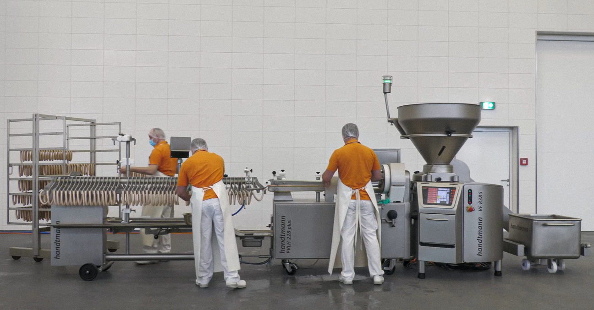
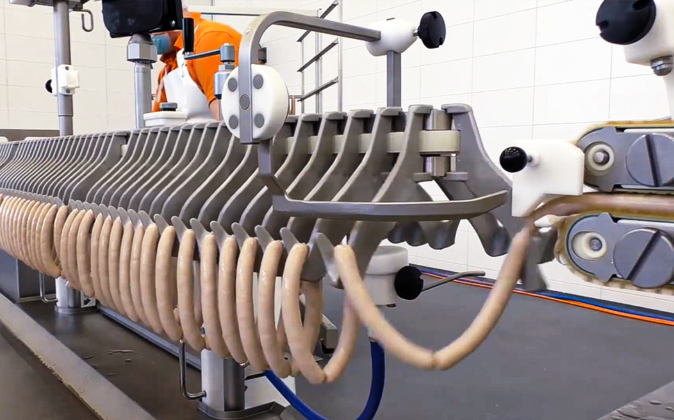

Handtmann
Handtmann
ソーセージ・ケーシング製品製造ライン
天然腸から植物由来ケーシングまで対応。グラム単位の定量充填と高度なリンキング技術で、多様なケーシング製品の品質と生産性を向上
Handtmann ソーセージ・ケーシング製品製造ラインとは
真空定量充填機（VFシリーズ）とALシステム（Automatic Linking System）を組み合わせ、充填からリンキング、長さ制御、カット、ハンギングまでを高精度かつ効率的に行うソリューションです。Handtmannが長年培ってきたリンキング技術により、重量・長さ・形状を均一化し、安定した製品品質と高い生産性を実現します。天然腸、コラーゲンケーシング、セルロースケーシング、人工ケーシング、植物由来ケーシングまで幅広く対応。小規模事業者向けのManualシステムから、ホットドッグなどの大量生産に対応するFully Automaticシステムまで、生産規模や製品特性に応じた最適なライン構築が可能です。




最適なALシステム提案
- 小規模・多品種生産向け（PLH216、PLS115）
- 中規模生産向け（PVLH226、PVLH228 plus 他）
- 大規模生産向け（PVLH248、PVLH251、PVLH252L 他）
によるライン統合管理
による生産最適化
- HCU（Handtmann Communication Unit）
- HMC（Handtmann Machine Cockpit）
- HMF（Handtmann Monitoring Functions）
- MSA（Machine Setup Assistant）
まずはお気軽にお問い合わせください。
Hygienic Design
食品工場向けに衛生性と洗浄性に配慮した設計を採用しています。
国内サポート体制
導入提案からテスト、立上げ、アフターサポートまで国内スタッフが対応します。
グローバル導入実績
Handtmannは世界各国の食肉加工・食品製造工場で採用されている充填・リンキングシステムメーカーです。
真空定量充填後のリンキング、カット、ハンギング工程を自動化するシステムです。
天然腸、コラーゲンケーシング、セルロースケーシング、人工ケーシング、植物由来ケーシングに対応しています。
リンキング位置を正確に形成するHandtmann独自の技術です。重量精度や長さ精度向上に貢献します。
はい。PLH216やPLS115などのManualモデルをご用意しています。
はい。PVLH248は多品種生産に適した柔軟性の高いモデルです。
はい。PVLH251・PVLH252Lは高速大量生産向けモデルです。
PVLH251は高速量産向けの標準モデルです。PVLH251Lは最大580mmの長尺シャーリングケーシングに対応したモデル、PVLH252Lは251Lと同仕様で生産方向を反転させたミラーモデルです。
はい。植物由来ケーシングや代替肉製品に対応しています。
はい。MULTIVAC包装機と連携したライン構築が可能です。
はい。HCU、HMC、HMF、MSAなどのHandtmann Digital Solutionsと連携することで、生産管理、重量管理、設備監視、設定支援を行うことができます。また、MULTIVAC Line Control（MLC）により包装ラインまで含めた統合管理にも対応可能です。